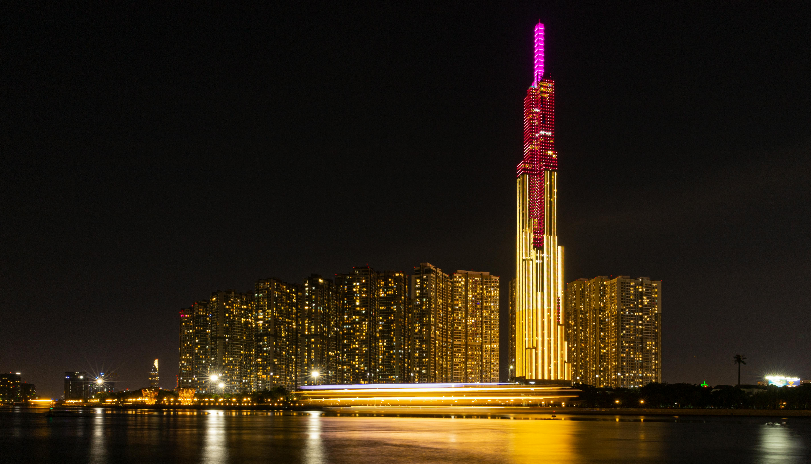
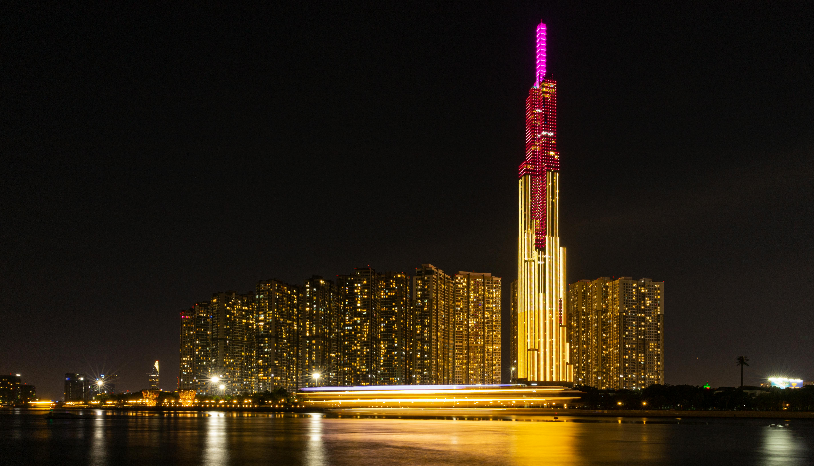

Văn hóa/Lịch sử
Ẩm thực: Nơi đây có một nền ẩm thực đa dạng và phong phú. Với các món ăn lề phố tới những nhà hàng sang trọng luôn mang đến cho du khách những thích thú riêng về nền ẩm thực của Sài Gòn. Những khu phố ẩm thực, những quán ăn nổi tiếng với đầy đủ các món ăn chay, mặn như cơm tấm, bún bò, bánh cuốn,... khác nhau sẽ đem đến cho du khách một trải nghiệm hoàn toàn mới về ẩm thực nơi đây.
Công trình, kiến trúc: Trải qua hơn 160 năm phát triển thì ngày nay Tp.Hồ Chí Minh vẫn lưu giữ được những công trình văn hóa nghệ thuật từ thời xa xưa: Nhà thờ Đức Bà, chợ Bến Thành, bưu điện trung tâm Thành phố, dinh Độc Lập… .
Văn hóa Sài Gòn luôn là thành phố đa dạng văn hóa. Ngay từ giai đoạn thành lập, dân cư của Sài Gòn đã thuộc nhiều dân tộc khác nhau: Kinh, Hoa, Chăm,... Thời kỳ thuộc địa rồi Chiến tranh Việt Nam, Sài Gòn hấp thụ thêm nền văn hóa Âu – Mỹ. Cho tới những thập niên gần đây, những hoạt động kinh tế, du lịch tiếp tục giúp thành phố có nền văn hóa đa dạng hơn.
 
